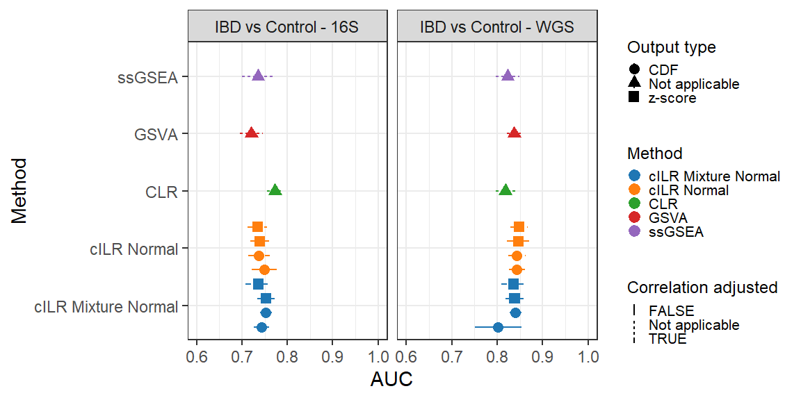
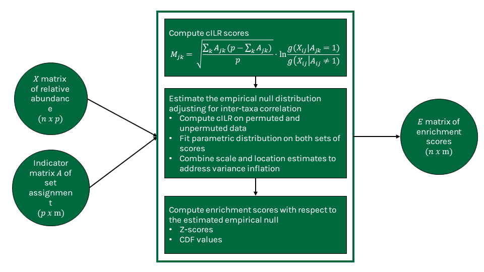

Our method leverages the isometric log ratio transformation to generate enrichment scores for taxa sets that can be used for standard microbiome analyses while also allowing for sample-level significance testing under a competitive null hypothesis
cILR: Taxonomic Enrichment Analysis with Isometric Log Ratios
Quang Nguyen1 2 Anne G. Hoen1 2 H. Robert Frost2
1 Department of Epidemiology, Dartmouth College
2 Department of Biomedical Data Science, Dartmouth College
Introduction
- Standard microbiome analyses often aggregate variables to sets, commonly Linnean taxonomic categories (e.g. Phylum) identified through sequence classification. Aggregation can help with standard challenges with microbiome relative abundance data, such as high-dimensionality and sparsity.
- However, most researchers perform aggregation through the pairwise summation of counts, preventing comparison across sets of different sizes. Count-based aggregation methods also do not preserve inter-sample distances, due to fact that microbiome data is uniquely compositional.
- Here we developed a method to aggregate variables through computing a competitive enrichment score, comparing those inside the set and those outside the set.
Acknowledgements
This research is supported by funding from the National Institutes of Health (grants NLM R01LM012723, NIGMS P20GM104416, NLM K01LM012426 NIH UG3 OD023275, NIEHS P01ES022832 and EPA RD-83544201).
Results
Sample-level significance testing
![Type I error and power of sample-level enrichment testing using cILR compared against a naive Wilcoxon Rank Sum test. Panel **(A)** presents type I error evaluated in parametric simulations under different set sizes, inter-taxa correlation and sparsity. Panel **(B)** presents power evaluated in parametric simulations under different effect sizes, inter-taxa correlation and sparsity. For panels **(C)** and **(D)**, we utilized the the 16S rRNA sequencing dataset of supragingival and subgingival sites from the Human Microbiome Project where supragingival sites are known to have enriched aerobic microbes. Here, we test for the enrichment of aerobic microbes across all samples, and considered a true positive is when a sample is significantly enriched for aerobic microbes and labelled as supragingival.](poster_files/figure-html/figure1-1.png)
Figure 1: Type I error and power of sample-level enrichment testing using cILR compared against a naive Wilcoxon Rank Sum test. Panel (A) presents type I error evaluated in parametric simulations under different set sizes, inter-taxa correlation and sparsity. Panel (B) presents power evaluated in parametric simulations under different effect sizes, inter-taxa correlation and sparsity. For panels (C) and (D), we utilized the the 16S rRNA sequencing dataset of supragingival and subgingival sites from the Human Microbiome Project where supragingival sites are known to have enriched aerobic microbes. Here, we test for the enrichment of aerobic microbes across all samples, and considered a true positive is when a sample is significantly enriched for aerobic microbes and labelled as supragingival.
Classification capacity
![Classification power of cILR scores compared against existing methods in the gene set testing literature that generates single sample enrichment scores. Area under the ROC curve (AUC) measures whether scores highly rank samples where the set of interest is known to be enriched. Panel **(A)** presents results under different parametric simulation conditions while panel **(B)** presents similar analyses on the 16S rRNA sequencing dataset of supragingival and subgingival sites from the Human Microbiome Project. In this data set, supragingival sites are known to have enriched aerobic microbes.](poster_files/figure-html/figure2-1.png)
Figure 2: Classification power of cILR scores compared against existing methods in the gene set testing literature that generates single sample enrichment scores. Area under the ROC curve (AUC) measures whether scores highly rank samples where the set of interest is known to be enriched. Panel (A) presents results under different parametric simulation conditions while panel (B) presents similar analyses on the 16S rRNA sequencing dataset of supragingival and subgingival sites from the Human Microbiome Project. In this data set, supragingival sites are known to have enriched aerobic microbes.
Utilizing enrichment scores for disease prediction

Figure 3: Classification performance of a standard random forest model using cILR scores compared against existing methods in gene set testing literature and the standard centered-log ratio transformation approach. The learning task involves predicting patients with inflammatory bowel disease (including Crohn’s disease and ulcerative colitis) versus controls. Data sets used span both 16S rRNA sequencing (Gevers et al. 2014) and whole genome shotgun sequencing (Nielsen et al. 2014)
Methods

References
Gevers, Dirk, Subra Kugathasan, Lee A. Denson, Yoshiki Vázquez-Baeza, Will Van Treuren, Boyu Ren, Emma Schwager, et al. 2014. “The Treatment-Naive Microbiome in New-Onset Crohn’s Disease.” Cell Host & Microbe 15 (3): 382–92. https://doi.org/10.1016/j.chom.2014.02.005.
Nielsen, H. Bjørn, Mathieu Almeida, Agnieszka Sierakowska Juncker, Simon Rasmussen, Junhua Li, Shinichi Sunagawa, Damian R. Plichta, et al. 2014. “Identification and Assembly of Genomes and Genetic Elements in Complex Metagenomic Samples Without Using Reference Genomes.” Nature Biotechnology 32 (8): 822–28. https://doi.org/10.1038/nbt.2939.